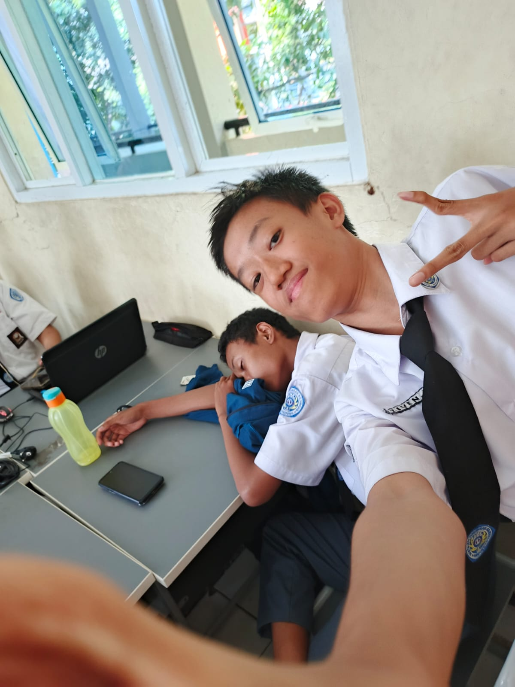
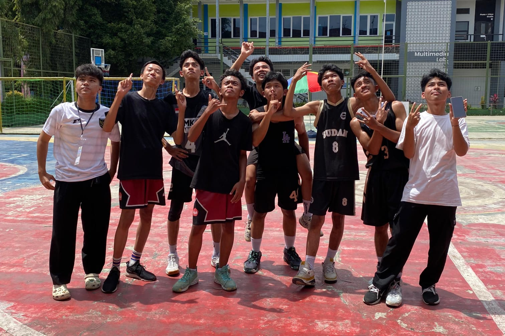
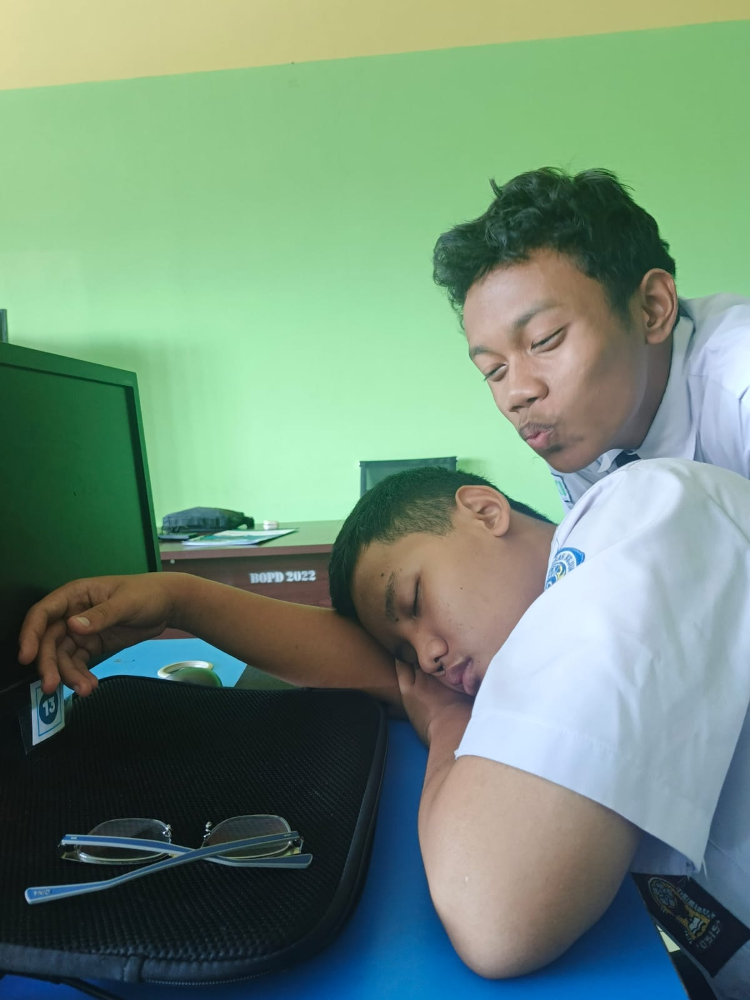

"Lu inget ga sih pas detik detik di bagi kelas, behh deg deg an banget gw di sana, cuma pas lu bilang PPLG 3, gw udah seneng tuh, cuma gw prank dikit lah kalo kita ga sekelas, terus pas gw bilang kalo ternyata sekelas kita peluk-pelukan di tengah lapang kek orang gila, wkwkwkwk"

"Ini kelas 11 sih PEAK dan stress parah yak, banyak banget hal-hal yang masih memorable di gw, kayak terbentuknya Tychi, banyak romance juga ya wkwkwk creepy bet, tapi yang paling seru menurut gw sih jelas porak ya, bisa ketawa bareng, emosian bareng, dan juga bisa merasakan menang bersama-sama itu sangat amat menyenangkan sih."

Selamat ulang tahun my sahabat! Udah selesai deh petualangannya, cuma persahabatan kita mah lanjut terus yakan? wkwkwkwk
Btw gw awalnya kaga mau bikin tau, cuma tiba-tiba mood soalnya gw ngerasa lu udah effort banget tuh mempertaruhkan segalanya buat bikin web hbd ke anu yakan, jadi yaaa karena lu kece badai yowes gw hadiahkan ke effort an lu ini dengan web sederhana buatan gw, btw bikinnya 3 jam doang kok wkwkwk
Yaaa gw cuma mau bilang makasih yak sudah menjadi sahabat gw dari SMP cuy, udah kurang lebih 5 tahun lah, dan yaaa selama kita bermain juga gw kadang ngerasa marah ke lu dan sebagainya, cuma sudah gw maafkan kok kalo over, wkwkwk, yaaa lu memang kayak begitu sih orangnya, gw jadi kepikiran pemikiran orang terhadap lu :/ jadi ya mungkin bisa aja lu bakal di anggap toxic atau sebagainya sama beberapa orang (yaa kaga salah si wkwkwk) cuma yaaaa gw yakin akan satu hal yang harus lu ingat (asik).
Kalau manusia itu jelas punya sisi baik dan buruknya, dan lu kalo bisa nampilin sisi buruk lu ke orang kan artinya lu udah jujur dan menjadi diri lu sendiri, dan itu sih yang menurut gw keren banget, jadi lu tidak menutupi semua hal yang ada di diri lu, semuanya murni sebuah ketulusan, jadi yaaa HBD cuy semoga di lancarkan yak segala urusannya. And pesan terakhir dari gw sih yaaaa
Tetap lah menjadi Jibun yang gw kenal.
Gimana seru kagak? atau malah menyedihkan? soalnya gw bikinnya rada terharu dikit sih, ho-ho-ho Kapten Neviz memang orang yang kece badai ho-ho-ho